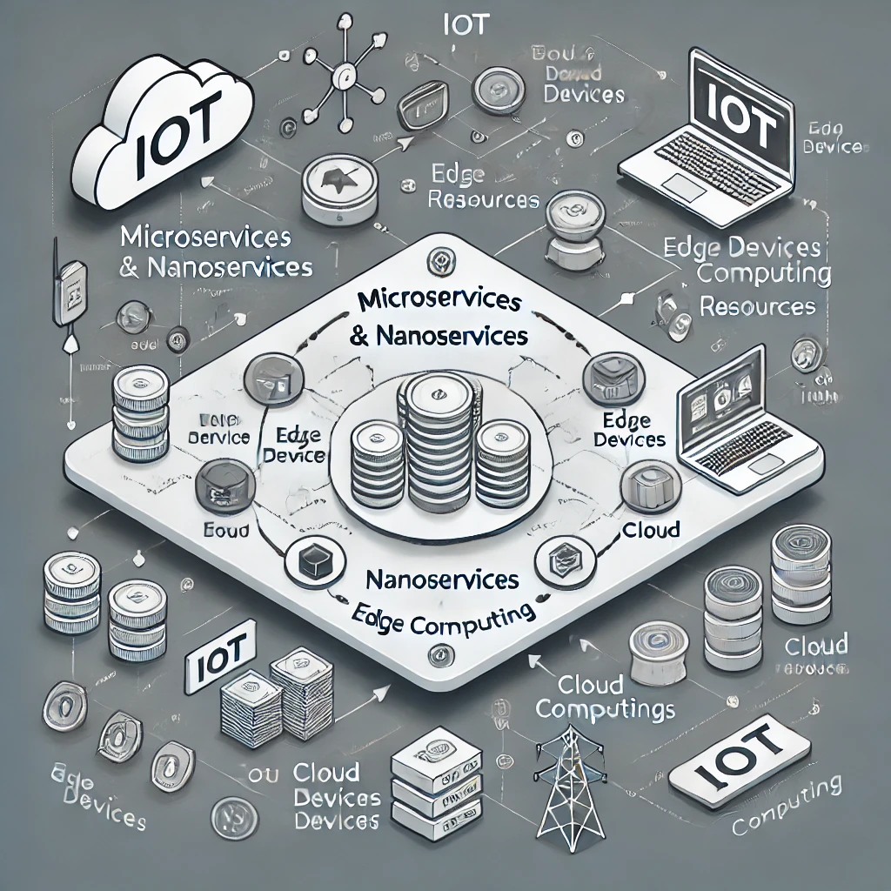
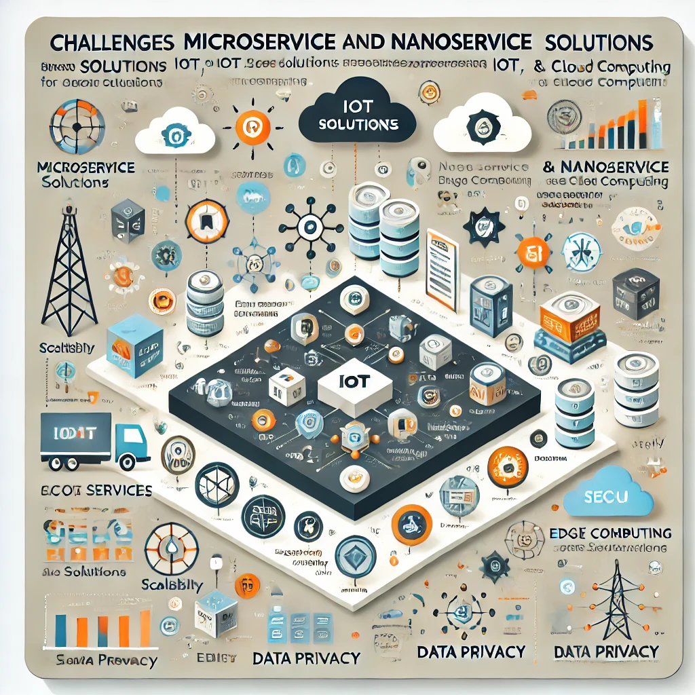
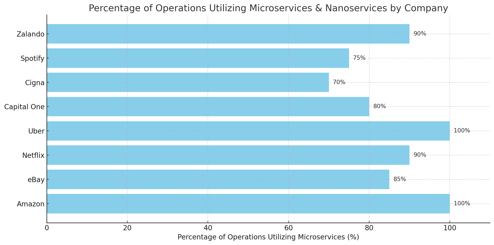
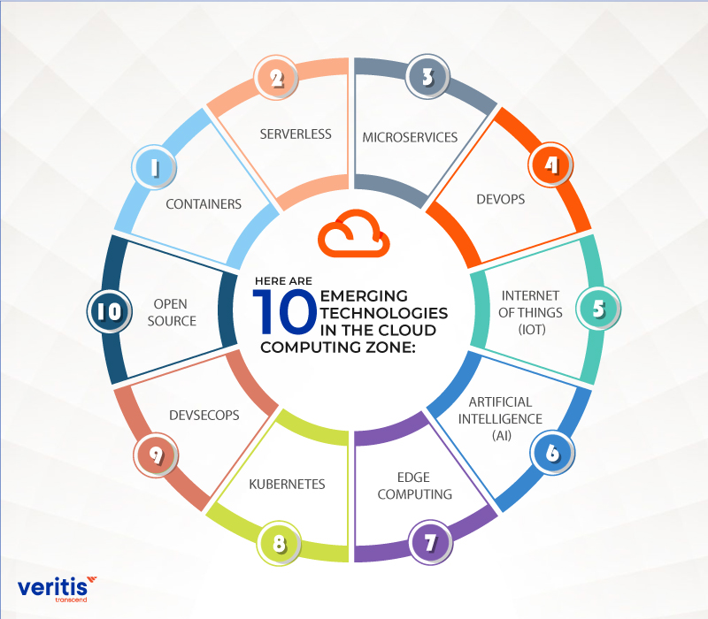

Introduction
The broad proliferation of IoT devices has greatly revolutionized many industries by allowing easy connectivity and interactions between devices on one side and data on the other. Whereas IoT devices are becoming pervasive in everyday life, demands have increased for real-time processing of data accordingly, which poses enormous challenges about distributed systems.
Making sure that systems can grow as the number of linked devices continues to soar is one of the most difficult tasks. Systems must be designed with intelligent, adaptable architectures that can instantly modify resources in order to manage this increase without sacrificing performance. This makes it possible to handle and analyze data smoothly and effectively, even on a massive scale.
Besides scalability, strengthening security is essential. Since IoT devices are so interconnected, they can be exposed to various cyber threats. It's crucial to protect sensitive data and ensure secure communication between devices to maintain user trust and protect privacy.
Lastly, maintaining systems' functionality and cutting expenses depend heavily on resource efficiency. It’s not just about making the best use of computing power and networks, but also managing energy carefully, especially for battery powered IoT devices that are often set up in remote places.
Solving these problems is key to making IoT solutions work smoothly. How well they’re handled can really affect the system’s efficiency, user experience, and overall reliability. If these issues aren’t addressed, IoT systems might not perform as well or be as dependable, which could make it harder to get the most out of the technology.

Architectural Solutions
These issues are increasingly being addressed by microservices and nanoservices, which provide the modularity and adaptability required to adjust to shifting workloads in cloud, edge, and IoT computing. This website explores these developments, offering perspectives on the most recent findings and patterns in the fascinating field of microservices and nanoservices.
Performance and Resource Management
This survey delves into the advancements and applications of microservice and nanoservice architectures, presenting a comprehensive analysis of their impact on:
- Performance
- Resource management
- Security

Microservices in Edge Computing
One of the key topics we explore is how microservices are used in edge computing and the Internet of Things. They play a vital role in processing data, managing sensors, and connecting devices. Nanoservices take this a step further by breaking services down into even smaller pieces, which is especially useful in resource-limited environments. We also take a close look at deployment strategies that can boost performance in cloud, fog, and edge settings, including approaches like reinforcement learning and graph-based optimization techniques
Security Considerations
In distributed systems, especially within the Internet of Things (IoT) ecosystem, tackling security issues is incredibly important. The way IoT devices are interconnected makes them vulnerable to a wide range of cyber threats, so it's essential to have strong security measures in place to protect sensitive information and keep communications secure. As these systems continue to evolve, this survey looks at various innovative methods aimed at strengthening microservices and nanoservices against potential cyberattacks.

Federated learning is one of the tactics we examined. This method preserves the data on each device while enabling models to be trained collectively across several devices. By doing this, we lessen the likelihood of data breaches that can occur when information is centralized, in addition to protecting privacy by minimizing the quantity of data that must be exchanged. It's a promising method for protecting important apps.
Using blockchain-based security frameworks is an important topic to concentrate on. Particularly in IoT environments, blockchain offers a decentralized, impenetrable method of data management that can greatly increase security and transparency. Businesses can develop systems that foster accountability and trust by utilizing tools like smart contracts and cryptographic approaches, which can help avert problems like data manipulation and illegal access.
The survey also emphasizes how important it is to secure API gateways. Since they’re the main entry point for communication between microservices, protecting them is key to preventing issues like data leaks and injection attacks. By putting strong authentication, authorization, and continuous monitoring in place, organizations can make their entire system much more secure and resilient.
In industries such as healthcare, the protection of patient data is not just important—it's crucial. Of course! Sensitive data protection is crucial, particularly in the medical field. We make important judgments based on reliable information, which is why security measures are so important. They guarantee the reliability of the data we use in addition to protecting patient privacy. We can make decisions with confidence when we know that our data is secure, which eventually improves care for all. The main goal is to establish a secure setting where patients can have faith that their data is treated carefully.
Breakthroughs in Healthcare Applications
Microservices and nanoservices are propelling major breakthroughs in IoT and healthcare applications, facilitating:
- Real-time health monitoring
- Improved healthcare decision-making
- Enhanced data analysis from medical sensors
Emerging Trends
The survey identifies several emerging trends that are shaping the future landscape of distributed systems within the Internet of Things (IoT) ecosystem. These trends reflect the ongoing evolution of technology and its implications for security, efficiency, and data management in an increasingly interconnected world.
One significant trend is the integration of blockchain technology with IoT. This convergence enhances security and transparency in data management, as blockchain provides a decentralized and tamper-proof ledger for recording transactions and interactions among devices. By leveraging the inherent properties of blockchain, organizations can ensure that data integrity is maintained, audit trails are established, and trust is fostered among users, ultimately mitigating the risks associated with centralized data storage and management.
Another notable trend is the rise of AI-driven security awareness. Artificial intelligence is increasingly being employed to monitor, analyze, and respond to security threats in real-time. By utilizing machine learning algorithms, organizations can proactively identify anomalies and potential vulnerabilities, allowing for swift intervention and reducing the likelihood of successful cyberattacks. This dynamic approach not only enhances the overall security posture but also facilitates a more adaptive response to the constantly evolving threat landscape.
Additionally, federated learning is gaining traction as a powerful technique for decentralized data processing. This approach enables multiple parties to collaboratively train machine learning models without sharing their raw data, thus preserving user anonymity and enhancing data privacy. By allowing devices to learn from one another while keeping sensitive information local, federated learning fosters a more secure and privacy-centric environment, particularly important in sectors that handle sensitive data, such as healthcare and finance.
Together, these emerging trends highlight the innovative solutions being developed to address the challenges posed by the growing complexity of distributed systems. By integrating advanced technologies such as blockchain and AI, along with adopting privacy-preserving methodologies like federated learning, organizations can enhance security, streamline operations, and build resilient systems capable of adapting to future demands.
Ongoing Challenges
Notwithstanding these developments, several difficulties still exist, including:

- Scalability in various contexts
- Balancing privacy and security issues
- Optimizing energy use
- Coordinating communication between microservices and nanoservices
These ongoing challenges highlight the importance of continued research and innovation to unlock the full potential of microservices and nanoservices. By exploring recent developments and looking ahead to future research opportunities, this survey provides a thorough overview of the current landscape in cloud, edge, and IoT computing. In other words, while we’ve made great strides, there’s still a lot to discover and improve. This survey not only captures where we are today but also sets the stage for what’s next, emphasizing the need for creativity and collaboration in tackling these challenges.